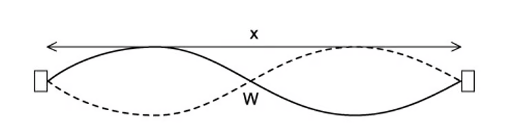
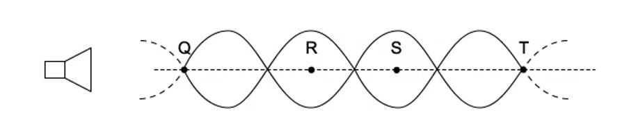
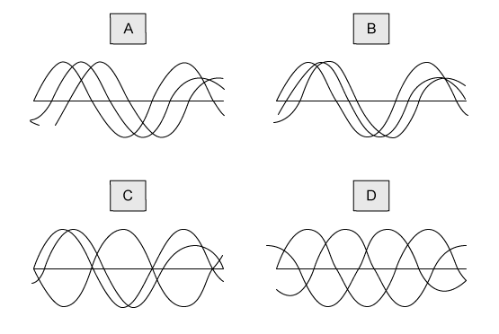
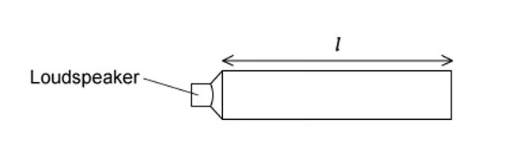
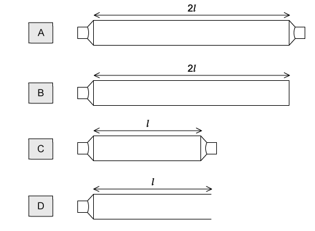
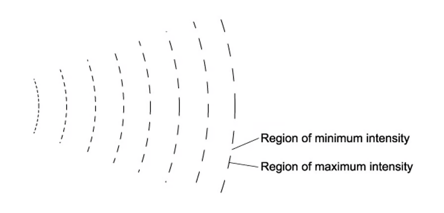

8 Superposition
Stationary waves, diffraction, interference and the diffraction grating
Learning objectives
By the end of this chapter, you should be able to:
- explain and use the principle of superposition;
- show an understanding of experiments that demonstrate stationary waves using microwaves, stretched strings and air columns;
- explain the formation of a stationary wave using a graphical method, and identify nodes and antinodes;
- determine wavelength from the positions of nodes or antinodes of a stationary wave;
- explain the meaning of the term diffraction;
- show an understanding of experiments that demonstrate diffraction, including the effect of gap width relative to wavelength;
- understand the terms interference and coherence;
- show an understanding of experiments that demonstrate two-source interference using water waves, sound, light and microwaves;
- understand the conditions required for two-source interference fringes to be observed;
- recall and use \(\lambda = ax/D\) for double-slit interference using light;
- recall and use \(d\sin\theta = n\lambda\) for a diffraction grating.
8.1 The principle of superposition
Principle of superposition
When two or more waves meet at a point, the principle of superposition states that the resultant displacement is the vector sum of the individual displacements of each wave.
\[y_{\text{resultant}} = y_1 + y_2 + y_3 + \dots\]
This principle applies to all types of waves — mechanical and electromagnetic — and is the foundation for understanding stationary waves and interference.
Constructive superposition occurs when waves meet in phase (crest meets crest or trough meets trough), producing a larger amplitude.
Destructive superposition occurs when waves meet in antiphase (crest meets trough), producing a smaller or zero amplitude.
8.2 Stationary waves
Formation of stationary waves
A stationary wave (also called a standing wave) is formed when two progressive waves of the same frequency, wavelength and amplitude travel in opposite directions through the same medium and superpose.
This often happens when a progressive wave is reflected at a boundary. The incident and reflected waves travel in opposite directions and, by the principle of superposition, create a stationary pattern.
Key features:
- Nodes are points of zero displacement (minimum amplitude). They occur where the two waves always arrive in antiphase and cancel.
- Antinodes are points of maximum displacement. They occur where the two waves always arrive in phase and reinforce.
In a stationary wave, no net energy is transferred — the energy is stored in the oscillations of the medium.
Graphical method for stationary waves
A stationary wave can be represented graphically by drawing the two progressive waves travelling in opposite directions at several instants of time. The superposition of the two waves at each instant shows the stationary pattern.
At a node, the displacement is always zero. At an antinode, the displacement varies between \(+2A\) and \(-2A\) (where \(A\) is the amplitude of each individual progressive wave).
The distance between two adjacent nodes (or two adjacent antinodes) is \(\lambda/2\), where \(\lambda\) is the wavelength of the progressive waves. The distance between a node and the next antinode is \(\lambda/4\).
Wavelength from nodes and antinodes
For a stationary wave:
\[\text{distance between successive nodes} = \frac{\lambda}{2}\] \[\text{distance between successive antinodes} = \frac{\lambda}{2}\] \[\text{distance from a node to the nearest antinode} = \frac{\lambda}{4}\]
The wavelength of the original progressive waves can therefore be determined from the positions of nodes or antinodes.
Stationary waves on stretched strings
A stretched string fixed at both ends can support stationary waves. When the string is plucked or vibrated at the correct frequency, a stationary wave is formed.
For the fundamental mode (first harmonic), the string has one loop: there is a node at each fixed end and one antinode in the middle. The length of the string \(L = \lambda/2\).
Higher harmonics produce more nodes and antinodes:
- 1st harmonic (fundamental): \(L = \lambda/2\)
- 2nd harmonic: \(L = \lambda\)
- 3rd harmonic: \(L = 3\lambda/2\)
- \(n\)th harmonic: \(L = n\lambda/2\)
The frequency of the \(n\)th harmonic is \(f_n = n f_1\), where \(f_1\) is the fundamental frequency.
Stationary waves in air columns
Stationary waves can also be formed in air columns. The type of wave depends on the boundary conditions:
Closed pipe (one end closed, one end open): - The closed end is a node (air particles cannot move). - The open end is an antinode (air particles are free to move). - Fundamental: \(L = \lambda/4\) - Harmonics occur at odd multiples of the fundamental: \(f_n = (2n-1)f_1\)
Open pipe (both ends open): - Both ends are antinodes. - Fundamental: \(L = \lambda/2\) - All harmonics are present: \(f_n = n f_1\)
End corrections are assumed to be negligible for the CIE syllabus.
Experiment: stationary waves using microwaves
Microwaves from a transmitter are directed at a metal reflector. The incident and reflected microwaves superpose to form a stationary wave. A probe detector moved along the path between the transmitter and the reflector detects nodes (minimum signal) and antinodes (maximum signal). The wavelength can be determined from the node-to-node distance.
8.3 Diffraction
Diffraction
Diffraction is the spreading out of waves when they pass through a gap or around an obstacle.
The amount of diffraction depends on the size of the gap or obstacle relative to the wavelength \(\lambda\) of the wave:
- When the gap width is comparable to \(\lambda\), significant diffraction occurs — the waves spread out almost as circular waves from the gap.
- When the gap width is much larger than \(\lambda\), very little diffraction occurs — the waves pass through mostly undisturbed.
- When the gap width is much smaller than \(\lambda\), the wave is almost completely blocked.
Experiments that demonstrate diffraction include: - Water waves in a ripple tank passing through gaps of different widths - Sound waves diffracting around doorways (audible because \(\lambda\) is comparable to the door width) - Light passing through a narrow slit (diffraction effects are visible when the slit is very narrow)
8.4 Interference
Interference and coherence
Interference is the superposition of two or more waves from coherent sources, producing a pattern of maxima and minima of intensity.
Coherence is a property of two wave sources that have: 1. The same frequency 2. A constant phase difference
Two sources that are not coherent will not produce a stable interference pattern because the phase difference changes randomly over time.
Conditions for observable interference
For a stable interference pattern to be observed:
- The sources must be coherent (same frequency, constant phase difference).
- The waves must overlap in the same region of space.
- The amplitudes should be similar for the best contrast between maxima and minima.
- For light, the sources should be monochromatic (single wavelength) or at least have a narrow bandwidth. White light produces a coloured fringe pattern but with limited visibility away from the centre.
Examples of two-source interference: - Water waves: two dippers in a ripple tank - Sound: two loudspeakers connected to the same signal generator - Light: Young’s double-slit experiment - Microwaves: two slits in a metal plate
Double-slit interference (Young’s experiment)
For light passing through two narrow slits separated by distance \(a\), with the screen at distance \(D\) from the slits:
\[\lambda = \frac{ax}{D}\]
where: - \(\lambda\) = wavelength of the light - \(a\) = slit separation - \(x\) = fringe spacing (distance between adjacent bright or dark fringes) - \(D\) = distance from the slits to the screen
This formula assumes that \(D \gg a\), so the small-angle approximation is valid.
8.5 The diffraction grating
The diffraction grating
A diffraction grating is a plate with many closely spaced parallel slits (typically hundreds or thousands of lines per millimetre). When monochromatic light passes through a diffraction grating, it produces very sharp, widely spaced maxima.
The sharpness of the maxima is due to the large number of slits: the more slits there are, the narrower and brighter the maxima become.
The diffraction grating equation
\[d\sin\theta = n\lambda\]
where: - \(d\) = slit spacing (distance between adjacent lines on the grating) - \(\theta\) = angle of the \(n\)th-order maximum from the normal - \(n\) = order number (\(0, 1, 2, 3, \dots\)) - \(\lambda\) = wavelength of the light
The maximum possible order is found from \(\sin\theta \leq 1\), so \(n \leq d/\lambda\).
Using a diffraction grating to determine wavelength
- Set up a monochromatic light source (e.g. a laser) so that it is incident normally on the diffraction grating.
- Measure the angle \(\theta\) of the first-order (\(n=1\)) maximum using a protractor or spectrometer.
- Calculate the slit spacing \(d\) from the number of lines per metre: \(d = 1/N\).
- Use \(d\sin\theta = \lambda\) to find the wavelength.
Repeating for higher orders (\(n=2, 3, \dots\)) improves accuracy. The average of several measurements reduces random errors.
Multiple Choice Questions
8.1 Stationary Waves - Easy
Example 1 · 8.1 MC Easy Q1
A stationary wave shown in the diagram was created on a stretched string, it had two instants of maximum vertical displacement.
The frequency of the wave is 13 Hz.

What is the speed of the wave?
A. 3.9 m s\(^{-1}\)
B. 7.8 m s\(^{-1}\)
C. 390 m s\(^{-1}\)
D. 780 m s\(^{-1}\)
Show answer and explanation
Answer: B. The diagram shows 1.5 waves in 90 cm, so \(\lambda = 90/1.5 = 60\ \text{cm} = 0.60\ \text{m}\). Speed \(v = f\lambda = 13 \times 0.60 = 7.8\ \text{m s}^{-1}\).Example 2 · 8.1 MC Easy Q2
The table shows some statements about stationary and progressive waves.
Which row is correct?
| Progressive wave | Stationary wave | |
|---|---|---|
| A | particles one wavelength apart vibrate in phase | particles one wavelength apart vibrate in phase |
| B | particles vibrate in phase with their immediate neighbours | particles in adjacent loops vibrate in antiphase |
| C | energy is transferred along the wave | energy is transferred along the wave |
| D | all particles vibrate with the same amplitude | all particles vibrate with the same amplitude |
Show answer and explanation
Answer: A. In a progressive wave, particles one wavelength apart are in phase. In a stationary wave, particles one wavelength apart (i.e. in the same loop) are also in phase. B is incorrect because in a progressive wave, adjacent particles are not necessarily in phase. C is incorrect because stationary waves do not transfer energy. D is incorrect because in a stationary wave, particles at nodes have zero amplitude.Example 3 · 8.1 MC Easy Q3
When a stationary wave is produced in a tube, which of the following statements describes the wave speed?
A. it is the speed of a particle at a node
B. it is the speed of one of the progressive waves that are producing the stationary wave
C. it is the speed at which energy is transferred from one antinode to an adjacent antinode
D. it is the distance between two adjacent nodes divided by the period of the wave
Show answer and explanation
Answer: B. The wave speed of a stationary wave is the speed of one of the progressive waves that are producing the stationary wave. The speed of the progressive wave is \(v = f\lambda\), not the speed of a particle at a node (which is zero), nor the speed at which energy is transferred (there is no net energy transfer).Example 4 · 8.1 MC Easy Q4
A stretched string is set up to demonstrate a stationary wave between two points M and Q.

Which of the following statements are correct?
A. the distance between M and Q is three wavelengths
B. the wave shown has the lowest possible frequency
C. points N and P vibrate in phase
D. point O is at a node
Show answer and explanation
Answer: C. N and P are in adjacent loops of the stationary wave, and points in adjacent loops vibrate in phase because they are separated by one wavelength. A is incorrect — the distance between M and Q is one wavelength. B is incorrect — the wave shown is the fundamental mode (lowest frequency), so this statement is actually true, but let’s check: the lowest frequency mode has one loop. Here there are two loops, so it’s the second harmonic. D is incorrect — point O is at an antinode.Example 5 · 8.1 MC Easy Q5
A stretched string is used to demonstrate a stationary wave, as shown in the diagram.

Which row in the table correctly describes the length of x and the name of W?
| Length x | Point W | |
|---|---|---|
| A | two wavelengths | node |
| B | one wavelength | node |
| C | two wavelengths | antinode |
| D | one wavelength | antinode |
Show answer and explanation
Answer: B. The distance x spans one complete wave (from one node to the next node one wavelength away). Point W is at a node (zero displacement).8.1 Stationary Waves - Medium
Example 6 · 8.1 MC Medium Q1
A student was investigating the speed of a transverse wave on a stretched spring. They found that by adjusting the tension on the spring, they were able to change the speed.
The wave pattern produced is shown in the diagram; the frequency of the oscillator was set to 650 Hz.

What needs to be changed to maintain the same wave pattern when the frequency is increased to 750 Hz?
A. increase the speed of the wave on the string
B. increase the wavelength of the wave on the string
C. decrease the wavelength of the wave on the string
D. decrease the speed of the wave on the string
Show answer and explanation
Answer: A. To maintain the same wave pattern (same number of loops), the wavelength must stay the same. Since \(v = f\lambda\), if \(f\) increases and \(\lambda\) stays the same, the speed \(v\) must increase.Example 7 · 8.1 MC Medium Q2
The pattern produced when two waves are produced by superposition of sound waves from a loudspeaker reflected by a metal sheet.
Q, R, S and T are four points on the line through the centre of these waves.

Which of the following statements is correct?
A. a node is a quarter of a wavelength from an adjacent antinode
B. the stationary waves oscillate at right angles to the line QT
C. an antinode is formed at the surface of the metal sheet
D. the oscillations at R are in phase with those at S
Show answer and explanation
Answer: A. The distance between a node and the nearest antinode is \(\lambda/4\). B is incorrect — sound waves are longitudinal, so they oscillate parallel to the direction of travel. C is incorrect — the metal sheet is a fixed end, so a node is formed there. D is incorrect — R and S are in adjacent loops and are in antiphase.Example 8 · 8.1 MC Medium Q3
Headphones that have noise reduction can cancel out external noise by producing their own waves. They are fitted with a microphone that detects the external sound frequency. The loudspeaker then produces a wave with the same frequency but different phase.
What would be the phase difference needed to cancel out the external sound?
A. 360°
B. 270°
C. 180°
D. 90°
Show answer and explanation
Answer: C. For destructive interference (cancellation), the two waves must be in antiphase, which requires a phase difference of 180°.Example 9 · 8.1 MC Medium Q4
The diagram below shows a wave pattern over time.

What is the correct description of the wave?
A. the wave is transverse, has a wavelength of 40 cm and is stationary
B. the wave is transverse, has a wavelength of 40 cm and is progressive
C. the wave is transverse, has a wavelength of 20 cm and is stationary
D. the wave is longitudinal, has a wavelength of 20 cm and is stationary
Show answer and explanation
Answer: D. The wave shows nodes and antinodes, so it is stationary. From the diagram, the wavelength is 20 cm and the wave is longitudinal (the particles oscillate parallel to the direction of travel, as shown by the compression/rarefaction pattern).Example 10 · 8.1 MC Medium Q5
The diagram below shows a sound wave produced in a column by a loudspeaker. The speed of sound in air is 330 m s\(^{-1}\).

What is the frequency of the wave?
A. 1650 Hz
B. 830 Hz
C. 550 Hz
D. 413 Hz
Show answer and explanation
Answer: D. The diagram shows a closed pipe with a node at the closed end and an antinode at the open end. The length 60.0 cm = \(\lambda/4\), so \(\lambda = 2.40\ \text{m}\). Frequency \(f = v/\lambda = 330/2.40 = 137.5\ \text{Hz}\). Wait — let me recalculate: Actually the diagram shows a different configuration. If the pipe length is 60.0 cm = 3\(\lambda/4\) (three quarters of a wavelength), then \(\lambda = 0.80\ \text{m}\), and \(f = 330/0.80 \approx 413\ \text{Hz}\).Example 11 · 8.1 MC Medium Q6
Each of the diagrams below shows three waves; each of the waves have the same amplitude and frequency but have different phases. The waves are added together to give a resultant wave. In which case would the resultant wave be zero?

Show answer and explanation
Answer: A. In diagram A, the three waves are equally spaced in phase (120° apart). When three waves of equal amplitude and 120° phase difference are superposed, the resultant displacement is zero at all times.Example 12 · 8.1 MC Medium Q7
A stationary sound wave produced in a tube has a series of nodes. The distance between the first node and the sixth node is 30 cm.
What is the wavelength of the wave?
A. 12.0 cm
B. 10.0 cm
C. 6.0 cm
D. 5.0 cm
Show answer and explanation
Answer: A. The distance between the first and sixth node covers 5 node-to-node intervals. Each interval is \(\lambda/2\). So \(5 \times (\lambda/2) = 30\ \text{cm}\), giving \(\lambda = 30 \times 2/5 = 12.0\ \text{cm}\).8.1 Stationary Waves - Hard
Example 13 · 8.1 MC Hard Q1
A demonstration of a standing wave is set up using a loudspeaker. The loudspeaker is emitting sound with a frequency \(f\) and is placed at one end of the pipe with length \(l\). The pipe is closed at the other end.

Different pipes were set up with either one or two loudspeakers of frequency \(f\). The pairs of loudspeakers were in phase with each other. Which pipe would contain a standing wave?
Show answer and explanation
Answer: A. For a standing wave to be produced, the waves must travel in opposite directions. In pipe A, the wave from the loudspeaker travels to the closed end, reflects, and interferes with the incident wave. In the other configurations, the waves from the two loudspeakers travel in the same direction or do not produce a standing wave.Example 14 · 8.1 MC Hard Q2
When a wind instrument is used to create a note, a stationary wave is produced in the column. An example of this is the horn.

For the range of notes produced by the horn, a node is formed at the mouthpiece and an antinode is formed at the bell. The frequency of the lowest note is 75 Hz.
What would be the frequencies of the next two higher notes for this air column?
| First higher note / Hz | Second higher note / Hz | |
|---|---|---|
| A | 225 | 375 |
| B | 150 | 300 |
| C | 150 | 225 |
| D | 75 | 150 |
Show answer and explanation
Answer: A. The horn behaves like a closed pipe (node at one end, antinode at the other). For a closed pipe, harmonics are odd multiples of the fundamental: \(f_n = (2n-1)f_1\). So the first higher note is \(3 \times 75 = 225\ \text{Hz}\), and the second is \(5 \times 75 = 375\ \text{Hz}\).Example 15 · 8.1 MC Hard Q3
A glass tube closed at one end, with a layer of fine powder laid inside as shown in the diagram, was set up. Sound was emitted from the loudspeaker and placed near the open end of the tube.
The frequency of the sound wave was changed; at one frequency a stationary wave was formed, and the powder formed 4 heaps. The distance between the four heaps of powder was 30 cm.

The speed of sound in the tube is 330 m s\(^{-1}\). What is the frequency of the sound?
A. 6600 Hz
B. 1650 Hz
C. 3300 Hz
D. 2200 Hz
Show answer and explanation
Answer: B. The 4 heaps of powder correspond to 4 nodes. The distance between the first and fourth heap covers 3 node-to-node intervals. Each interval is \(\lambda/2\), so \(3 \times (\lambda/2) = 30\ \text{cm}\), giving \(\lambda = 20\ \text{cm} = 0.20\ \text{m}\). Frequency \(f = v/\lambda = 330/0.20 = 1650\ \text{Hz}\).8.2 Diffraction & Interference - Easy
Example 16 · 8.2 MC Easy Q1
Which of the following is the definition of diffraction?
A. change of direction when waves cross the boundary between one medium and another
B. splitting of white light into colours
C. addition of two coherent waves to produce a stationary wave pattern
D. bending of waves around an obstacle
Show answer and explanation
Answer: D. Diffraction is the bending/spreading of waves around an obstacle or through an aperture. A describes refraction, B describes dispersion, and C describes superposition/interference.Example 17 · 8.2 MC Easy Q2
Two fringes were created on a screen in a double-slit experiment; the distances were too small to measure.
Which of the following would increase the distance between the fringes?
A. increasing the frequency of the light source
B. increasing the distance between the light source and the slits
C. increasing the distance between the slits and the screen
D. increasing the distance between the slits
Show answer and explanation
Answer: C. The fringe spacing \(x = \lambda D / a\). Increasing \(D\) (distance from slits to screen) increases the fringe spacing. A is incorrect because increasing \(f\) decreases \(\lambda\), which decreases \(x\). D is incorrect because increasing \(a\) (slit separation) decreases \(x\).Example 18 · 8.2 MC Easy Q3
The diagram shows the pattern of waves. The source of the waves was unable to be seen.

Which of the following would cause this pattern?
A. diffraction only
B. interference only
C. coherence only
D. diffraction and interference
Show answer and explanation
Answer: D. The pattern shows both diffraction (waves spreading out after passing through an aperture) and interference (the alternating regions of maximum and minimum intensity).Example 19 · 8.2 MC Easy Q4
An atomic lattice has a spacing of around \(10^{-10}\) m. Which electromagnetic wave would cause the most significant diffraction effect?
A. X-ray
B. infra-red
C. microwave
D. ultraviolet
Show answer and explanation
Answer: A. Significant diffraction occurs when the wavelength is comparable to the size of the obstacle/gap. X-rays have wavelengths around \(10^{-10}\) m, matching the atomic lattice spacing. Infra-red, microwave and ultraviolet wavelengths are much larger.Example 20 · 8.2 MC Easy Q5
A student set up an experiment with a diffraction grating. They put a narrow beam of monochromatic light incident along the normal. They found that the third-order diffracted beams are formed at angles of 45° to the original direction.
Which of the following gives the highest order of diffracted beam produced by this grating?
A. 6th
B. 5th
C. 4th
D. 3rd
Show answer and explanation
Answer: C. Using \(d\sin\theta = n\lambda\), for \(n=3\), \(\theta = 45^\circ\), so \(d\sin45^\circ = 3\lambda\), giving \(d = 3\lambda/\sin45^\circ = 3\sqrt{2}\lambda\). The maximum order occurs when \(\sin\theta = 1\), so \(n_{\text{max}} = d/\lambda = 3\sqrt{2} \approx 4.24\). Therefore the highest integer order is 4.Structured Questions
8.1 Stationary Waves - Medium
Example 1 · 8.1 SQ Medium Q1
(i) By reference to the direction of transfer of energy, state what is meant by a transverse wave.
(ii) State the principle of superposition.
[3 marks]
Show mark scheme / model answer
- (i) (Particle) vibrations / oscillations that are perpendicular to the direction of energy transfer.
[1] - (ii) Waves meet / overlap at a point;
[1]the resultant displacement is the sum of the individual displacements.[1]
[Total: 3 marks]
Example 2 · 8.1 SQ Medium Q2
A stationary wave on a string is shown in Fig. 1.1.

Explain how the wave is formed, referring to the principle of superposition in your answer.
[4 marks]
(b) On Fig. 1.1, draw the stationary wave that would be formed on the string in part (a) with two more nodes and two more antinodes.
[1 mark]
(c) Fig. 1.2 shows the appearance of a stationary wave on a stretched string at one instant in time.

Mark clearly on the diagram:
(i) the equilibrium position;
(ii) at least two nodes by labelling them N, and two antinodes by labelling them A;
(iii) the direction in which points Q, R, S and T are about to move.
[5 marks]
(d) For the wave in Fig. 1.2, the frequency of vibration is 180 Hz and the speed of the waves along the string is 60 m s\(^{-1}\).
(i) Calculate the time period of the stationary wave on the string.
(ii) Calculate the length of the string.
[3 marks]
Show mark scheme / model answer
(a) - Progressive waves travel (from the centre) to the end(s) and then reflect. [1] - Two (progressive) waves travel in opposite directions along the string having the same/similar frequency/wavelength/amplitude. [1] - (The two waves) superpose / interfere to produce the stationary wave. [1] - The (maximum) displacement is twice the initial maximum displacement / equal to the sum of the displacements of the individual waves. [1]
[Total: 4 marks]
(b) - A stationary wave drawn with 4 nodes and 3 antinodes (one more loop on each side of the centre). [1]
[Total: 1 mark]
(c) - (i) Equilibrium position is horizontal and meets the fixed end. [1] - (ii) At least two correct N (nodes at points of zero displacement). [1] At least two correct A (antinodes at points of maximum displacement). [1] - (iii) Q, R and T moving downwards. [1] S moving upwards. [1]
[Total: 5 marks]
(d) - (i) \(T = 1/f = 1/180 = 5.6 \times 10^{-3}\ \text{s}\) (or 5.6 ms). [1] - (ii) Using \(v = f\lambda\), \(\lambda = v/f = 60/180 = 0.33\ \text{m}\). [1] From the diagram, the string contains 2.5 wavelengths, so length \(= 2.5 \times 0.33 = 0.83\ \text{m}\) (83 cm). [1]
[Total: 13 marks]
Example 3 · 8.1 SQ Medium Q3
Fig. 1.1 shows a stationary wave formed on a guitar string fixed at P and Q when it is plucked at its centre.

X is a point on the string at maximum displacement.
Explain why a stationary wave is formed on the string.
[3 marks]
(b) The stationary wave in Fig. 1.1 is the D string of the guitar which has a frequency of 146.83 Hz.
Calculate the time taken for the string at point X to move from maximum displacement to its next maximum displacement.
[3 marks]
(c) The progressive waves on the string travel at a speed of 190 m s\(^{-1}\).
Calculate the length of the D string.
[2 marks]
(d) A guitarist presses on the string at point R to shorten it and create the higher note E. The distance between R and Q in Fig. 1.2 is 0.29 m.
The speed of the progressive wave remains at 190 m s\(^{-1}\) and the tension remains constant.
Calculate the frequency of note E.
[3 marks]
Show mark scheme / model answer
(a) Any three from: - The progressive waves of the string travel (from the centre) to the ends/points P and Q and reflect. [1] - Two (progressive) waves travel in opposite directions along the string. [1] - (The two waves have) the same frequency / wavelength. [1] - (The two waves have) the same / similar amplitude. [1] - (The two waves) superpose / interfere to produce the stationary wave. [1]
[Total: 3 marks]
(b) - The next maximum displacement occurs after half a cycle. [1] - Time period for one cycle, \(T = 1/f = 1/146.83 = 6.8 \times 10^{-3}\ \text{s}\). [1] - Time for half a cycle \(= 0.5 \times 6.8 \times 10^{-3} = 3.4 \times 10^{-3}\ \text{s}\). [1]
[Total: 3 marks]
(c) - Using \(v = f\lambda\), \(\lambda = v/f = 190/146.83 = 1.29\ \text{m}\). [1] - Fig. 1.1 shows half a wavelength for the fundamental mode, so length of string \(L = 0.5 \times 1.29 = 0.65\ \text{m}\) (65 cm). [1]
[Total: 2 marks]
(d) - The length of the shortened string is RQ = 0.29 m, which is half a wavelength (fundamental mode). [1] - Wavelength \(\lambda = 2 \times 0.29 = 0.58\ \text{m}\). [1] - Frequency \(f = v/\lambda = 190/0.58 = 328\ \text{Hz}\) (330 Hz to 2 s.f.). [1]
[Total: 11 marks]
8.2 Diffraction & Interference - Medium
Example 4 · 8.2 SQ Medium Q1
Fig. 1.1 shows an arrangement for observing the interference pattern produced by laser light passing through two narrow slits \(S_1\) and \(S_2\).

The distance \(S_1 S_2\) is \(d\), and the distance between the double slit and the screen is \(D\), where \(D \gg d\), so angles \(\alpha\) and \(\theta\) are small.
M is the midpoint of \(S_1 S_2\) and it is observed that there is a bright fringe at point A on the screen, a distance \(f_1\) from point O on the screen. Light from \(S_1\) travels a distance \(S_2\)Y further to point A than light from \(S_2\).
The wavelength of light from the laser is 650 nm and the angular separation of the bright fringes on the screen is \(5.00 \times 10^{-4}\) rad.
(a) Calculate the distance between the two slits.
[3 marks]
(b) A bright fringe is observed at A.
(i) Explain the conditions required in the paths of the rays coming from \(S_1\) and \(S_2\) to obtain this bright fringe.
(ii) State an equation in terms of wavelength for the distance \(S_2\)Y.
[3 marks]
(c) Deduce expressions for the following angles in the double-slit arrangement shown in Fig. 1.1.
(i) \(\theta\) in terms of \(S_2\)Y and \(d\)
(ii) \(\phi\) in terms of \(D\) and \(f_1\)
[4 marks]
(d) The separation of the slits \(S_1\) and \(S_2\) is 1.30 mm. The distance MO is 1.40 m. The distance \(f_n\) is the distance of the ninth bright fringe from O and the angle \(\theta\) is \(3.70 \times 10^{-3}\) rad.
Calculate the wavelength of the laser light.
[2 marks]
Show mark scheme / model answer
(a) - Angular separation of fringes \(\theta = \lambda/d\). [1] - Rearranging: \(d = \lambda/\theta = 650 \times 10^{-9} / 5.00 \times 10^{-4}\). [1] - \(d = 1.30 \times 10^{-3}\ \text{m} = 1.30\ \text{mm}\). [1]
(b) - (i) The path difference (\(S_2\)Y) must be equal to a whole number of wavelengths. [1] The waves must be in phase / coherent. [1] - (ii) \(S_2\)Y = \(n\lambda\) (where \(n\) is the order number). [1]
(c) - (i) \(\sin\theta = \text{S}_2\text{Y} / d\). [1] Using small-angle approximation, \(\theta \approx \text{S}_2\text{Y} / d\). [1] - (ii) \(\tan\phi = f_1 / D\). [1] Using small-angle approximation, \(\phi \approx f_1 / D\). [1]
(d) - Using \(S_2\)Y = \(d\theta\) (from (c)) and \(S_2\)Y = \(n\lambda\) (from (b)): \(\lambda = d\theta / n\). [1] - \(\lambda = (1.30 \times 10^{-3})(3.70 \times 10^{-3}) / 9 = 5.34 \times 10^{-7}\ \text{m}\). [1]
[Total: 12 marks]
Example 5 · 8.2 SQ Medium Q2
A student is conducting a series of investigations on diffraction and interference with two slits.
In the first investigation, monochromatic light passes through a double-slit arrangement. The intensity of the fringes varies with distance from the central fringe.
The intensity of the monochromatic light passing through one of the slits is reduced.
Explain the effect of this change on the appearance of:
(i) The dark fringes
(ii) The bright fringes
[6 marks]
(b) In an investigation, a white light source is incident on an orange filter, a single slit, and then a double-slit, as shown in Fig. 1.2. An interference pattern of light and dark fringes is observed on the screen.

(i) The orange filter is now replaced by a green filter. State and explain the change in appearance, other than the change in colour, of the fringes on the screen.
(ii) The green filter is now removed. State and explain the change in the appearance of the central maximum fringe, as well as the fringes away from this central position.
[7 marks]
(c) In a third experiment, the white light is replaced by orange light of wavelength 600 nm. The double-slit has a separation of 0.350 mm and the screen is 6.35 m away.
Calculate the distance between the central and first maximum as seen on the screen.
[2 marks]
Show mark scheme / model answer
(a) - (i) The dark fringes are no longer completely dark. [1] The waves from the two slits no longer have the same amplitude. [1] Destructive interference is incomplete, so some light remains. [1] - (ii) The bright fringes are dimmer (less intensity). [1] The intensity of the bright fringes is no longer uniform — some bright fringes are brighter than others. [1] The central maximum is still the brightest. [1]
[Total: 6 marks]
(b) - (i) The fringe spacing decreases. [1] Green light has a shorter wavelength than orange light. [1] Since fringe spacing \(x = \lambda D/d\), a smaller \(\lambda\) gives smaller \(x\). [1] - (ii) The central maximum becomes white (all colours overlap). [1] Away from the centre, coloured fringes are seen (spectra). [1] Because different wavelengths of white light have different fringe spacings, so the maxima for different colours occur at different positions. [1] The fringes become less distinct / blurred at larger distances from the centre. [1]
[Total: 7 marks]
(c) - Using \(x = \lambda D / d\). [1] - \(x = (600 \times 10^{-9})(6.35) / (0.350 \times 10^{-3}) = 1.09 \times 10^{-2}\ \text{m} = 1.09\ \text{cm}\). [1]
[Total: 15 marks]
Example 6 · 8.2 SQ Medium Q3
A teacher explains a diffraction investigation to a group of physics students.
‘In this investigation a laser will be used to shine monochromatic light of wavelength 581.9 nm onto a diffraction grating. The light passing through the grating will therefore be coherent.’
Define the following terms used by the teacher:
(i) Monochromatic
(ii) Coherent
[3 marks]
(b) During the investigation, a second-order maximum is produced at an angle of 35° measured from the normal to the grating.
(i) Calculate the number of lines per metre on the grating.
(ii) Calculate the highest order which is observable.
[6 marks]
(c) Calculate the angular separation between the highest order and second order maxima.
[3 marks]
(d) The investigation is repeated using the same grating but a different monochromatic source. In this experiment, the second-order maximum is observed at an angle of 25.7°.
Calculate the wavelength of this second source.
[2 marks]
Show mark scheme / model answer
(a) - (i) Monochromatic: light of a single wavelength / frequency. [1] - (ii) Coherent: two sources that have a constant phase difference. [1] (And the same frequency.) [1]
[Total: 3 marks]
(b) - (i) Using \(d\sin\theta = n\lambda\): \(d = n\lambda / \sin\theta = 2 \times 581.9 \times 10^{-9} / \sin 35^\circ\). [1] \(d = 2.029 \times 10^{-6}\ \text{m}\). [1] Number of lines per metre \(N = 1/d = 4.93 \times 10^5\ \text{lines m}^{-1}\). [1] - (ii) Maximum order occurs when \(\sin\theta = 1\): \(n_{\text{max}} = d/\lambda = 2.029 \times 10^{-6} / 581.9 \times 10^{-9} = 3.49\). [1] Therefore the highest observable order is \(n = 3\). [1]
[Total: 6 marks]
(c) - For \(n=3\): \(\sin\theta_3 = 3\lambda/d = 3 \times 581.9 \times 10^{-9} / 2.029 \times 10^{-6} = 0.860\). [1] \(\theta_3 = \sin^{-1}(0.860) = 59.3^\circ\). [1] - Angular separation \(= \theta_3 - \theta_2 = 59.3^\circ - 35^\circ = 24.3^\circ\). [1]
[Total: 3 marks]
(d) - Using \(d\sin\theta = n\lambda\): \(\lambda = d\sin\theta / n = (2.029 \times 10^{-6})(\sin 25.7^\circ) / 2\). [1] - \(\lambda = 4.40 \times 10^{-7}\ \text{m} = 440\ \text{nm}\). [1]
[Total: 14 marks]